Dremio Transform Studio
Step-by-step walkthrough with screenshots — from connecting to Dremio through building, scheduling, and monitoring production pipelines.
Connect to Dremio
Tell Transform Studio where your Dremio instance lives and how to authenticate.
On first launch the catalog tree will be empty. Click the gear icon ⚙ in the top toolbar — the tooltip reads "Connection Settings" — to open Settings.
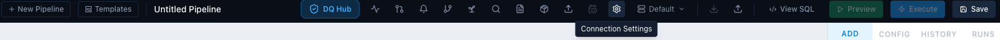

| Deployment | Auth Type | Fields |
|---|---|---|
| Self-hosted | Username / Password | host, port (9047), username, password |
| Dremio Cloud | Personal Access Token | api.dremio.cloud, PAT token, Project ID |
Click ⚙ gear icon in the top toolbar.
Click a Quick Setup preset (Self-hosted, Dremio Cloud US, or Dremio Cloud EU) to pre-fill the host.
Enter your credentials and click Test Connection — look for the green success message.
Click Save & Connect. The catalog tree populates on the left.
Main Layout Overview
Three-panel workspace — catalog on the left, pipeline in the center, controls on the right.
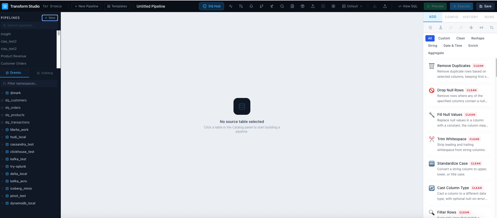
Pipeline List
All saved pipelines. Click to switch. Press ⌘K to search by name, step, or source table.
Catalog Tree
Browse Dremio namespaces and tables. Click any table to set it as the pipeline source.
Pipeline Builder
Numbered step cards. Drag the ⠿ grip to reorder. Click a card to configure it on the right.
ADD Tab
53 transforms in 7 categories. Click any card to instantly add it to the pipeline.
CONFIG Tab
Configuration form for the selected step. Column dropdowns auto-populated from schema.
Bottom Panel
Preview / Execute / SQL tabs. See live results or inspect the generated CTE chain.
The top toolbar (left to right): DQ Hub · Health · Approvals · Pipeline DAG · Alerts · Seed CSV · Export dbt · Import dbt · Schedule · Environments · Settings · Download doc · Share · View SQL · Preview · Execute · Save.
Create a Pipeline & Select a Source Table
Every pipeline starts with a source table from the Dremio catalog.

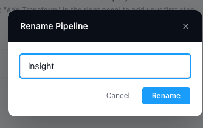
Click + New in the pipeline list or + New Pipeline in the toolbar.
In the left catalog tree, expand a namespace and click a table name — it becomes the pipeline's source.
Optionally add a description in the Notes field at the top of the builder.
Click Add to folder to organise the pipeline, or Add tag to label it (e.g.
finance,daily).Click the pencil / rename icon next to the pipeline name to give it a meaningful name.
Add Transform Steps
Browse 53 pre-built transforms across 7 categories and add them in one click.
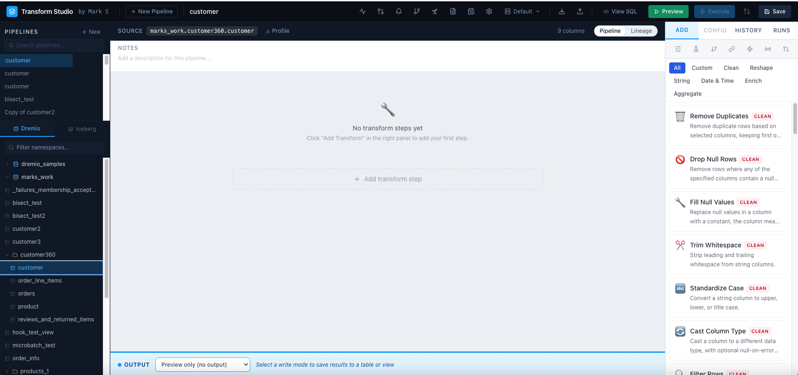
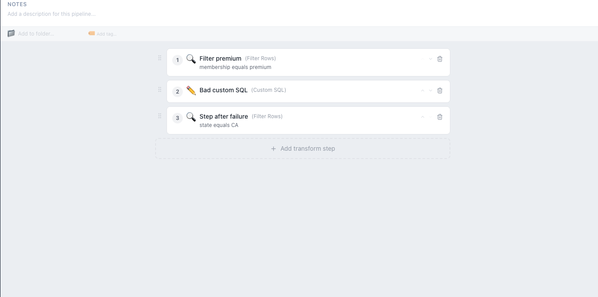
Clean (14)
Remove duplicates, fill nulls, cast types, trim, validate regex, filter rows…
Reshape (9)
Join, union, split columns, combine, unpivot, flatten JSON…
Date & Time (5)
Parse dates, extract parts, truncate, date diff, add intervals…
Enrich (10)
Lookup join, map values, bin, row numbers, conditional columns, lag/lead…
Aggregate (5)
Group & aggregate, top-N per group, rolling window, sample rows…
String (8)
Extract regex, pad, substring, hash, concat literal, surrogate key…
Custom SQL (1)
Full SQL editor with {input} placeholder + template library.
Configure a Transform Step
Click any step card to open its configuration form in the CONFIG tab on the right.
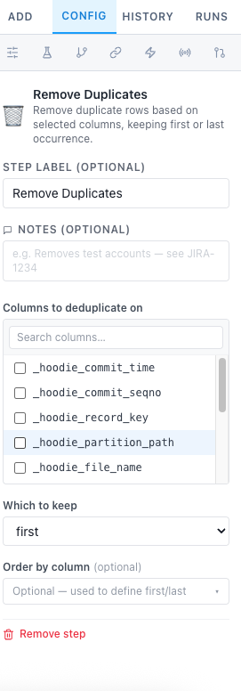
- Column dropdowns are automatically populated from the upstream schema.
- Use
{{param_name}}in any text field to make it a pipeline parameter (see Parameters section). - Every step has an optional Step Label to override the default name shown on the card.
- The optional Notes field adds a free-text annotation visible on the step card and searchable via ⌘K.
- Click Remove step at the bottom of the config panel to delete the step.
Custom SQL Step
Drop into a full SQL editor when the visual transforms aren't enough.
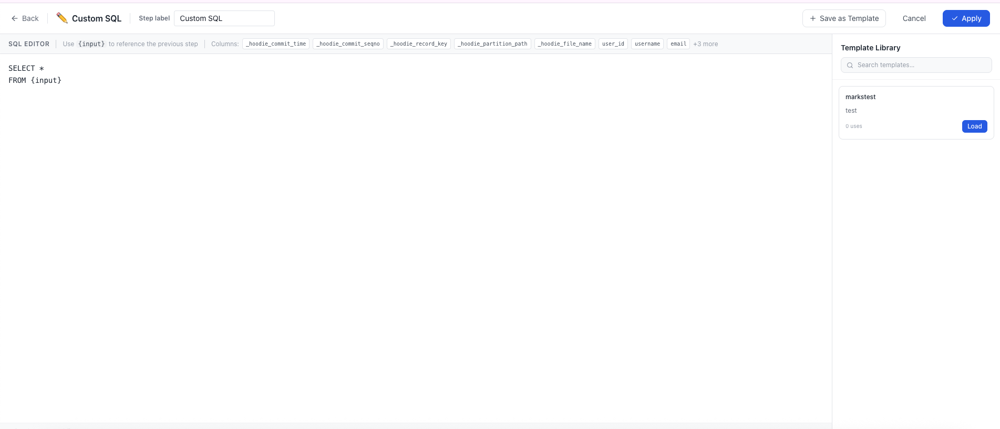
{input}— reference the upstream CTE in yourFROMclause. Transform Studio substitutes the actual CTE alias at compile time.- Template Library — click + Save as Template to store a snippet. Search and click Load to insert it in any future pipeline.
- Column names shown at the top are clickable — click to insert the name at the cursor position.
- Click Apply to save the SQL back to the step, then Preview to see results.
SELECT * EXCEPT. Use lax mode for JSON paths: JSON_VALUE(col, 'lax $.field'). Use RAND() not RAND(seed).Preview Results
See live query results from Dremio before writing anything.
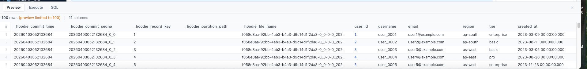
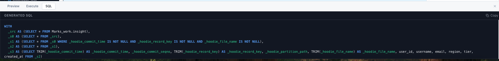
Click Preview in the toolbar (or the blue ▶ Preview button bottom-right of the builder).
Results appear in the bottom panel → Preview tab — scrollable grid with column headers.
Click the SQL tab to inspect the generated CTE chain — great for debugging.
Set Output Mode & Execute
Choose how to materialise your pipeline, then write data to Dremio.
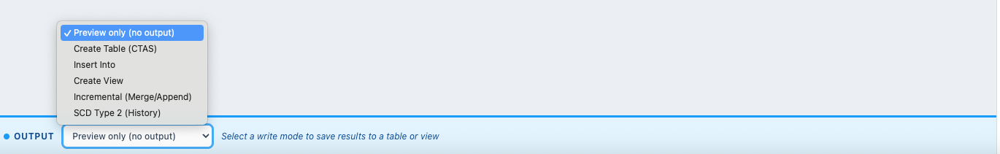
| Output Mode | What it does |
|---|---|
| Preview only | SELECT only — nothing written. For development. |
| Create Table (CTAS) | CREATE TABLE AS SELECT — creates or replaces a Dremio table. |
| Insert Into | INSERT INTO an existing table — appends new rows. |
| Create View | CREATE OR REPLACE VDS — a virtual dataset, no data copy. |
| Incremental | Append or merge only new rows since last run. |
| SCD Type 2 | Slowly changing dimension with history tracking. |
Set the Output Table name (e.g.
MySpace.daily_sales).Choose the Output Mode from the dropdown.
Click Execute in the toolbar. Transform Studio saves the pipeline first, then runs it.
On success, a green banner reports the row count. Any configured Pipeline Tests run automatically.
Visual Lineage
Column-level DAG from source through every step to the output.
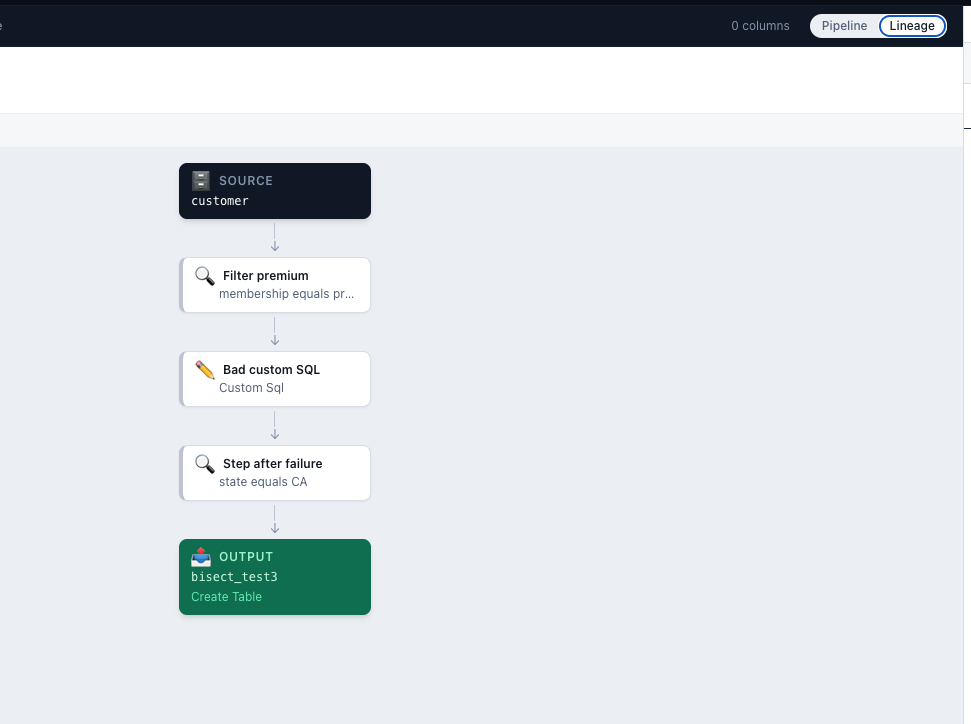
Click the Lineage button (top-right of the center panel) or use the Pipeline/Lineage toggle. Each node represents a step; edges show data flow. Expand any step to see column-to-column mappings — computed from the pipeline configuration, no run required.
Schedule a Pipeline
Run on a cron schedule with retry logic and optional SLA deadline alerting.
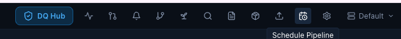
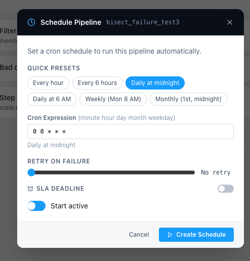
Click the CalendarClock icon in the toolbar (tooltip: "Schedule Pipeline").
Choose a Quick Preset or enter a custom cron expression (e.g.
0 6 * * *= 6 AM daily).Set Retry on Failure — drag the slider to configure up to 5 retries with exponential backoff.
Toggle SLA Deadline on and set a time (e.g.
08:00UTC) — if the pipeline hasn't completed by that time, an alert fires via email or Slack.Click Create Schedule (or Save Schedule if updating).
Pipeline Parameters
Make pipelines reusable by replacing hard-coded values with named parameters.
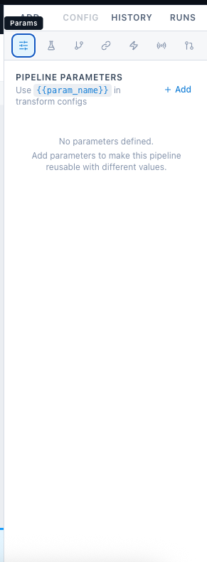
Open the Params tab (sliders icon ⊞ in the right-panel tab bar).
Click + Add and define a parameter: name, type (text / number / date / boolean / dropdown), and default value.
Use
{{param_name}}in any step's text config field — Transform Studio substitutes the value at runtime.When running manually, a Run with Parameters modal lets you override defaults before execution.
Scheduled runs use the default values. Webhook triggers can pass
param_valuesin the request body.
start_date parameter (type: date, default: 2024-01-01) and reference it in a Filter Rows step as order_date >= '{{start_date}}'. Now one pipeline handles any date range.Webhooks
Trigger any pipeline from an external system using a secure per-pipeline URL.
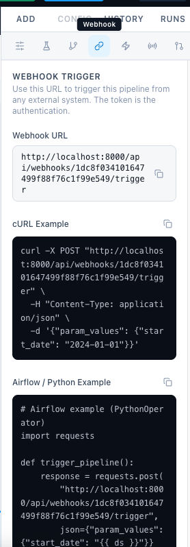
Open the Webhook tab (link icon 🔗 in the right-panel tab bar). Each pipeline has a unique URL — POSTing to it triggers an execution. The token in the URL is the only authentication required.
| Mode | Behaviour |
|---|---|
mode=async (default) | Returns immediately with a job_id. Poll the status endpoint to check completion. |
mode=sync | Waits for the pipeline to finish and returns the result (row count, status, errors). |
Pass param_values in the JSON body to override parameter defaults: {"param_values": {"start_date": "2024-06-01"}}
Pipeline Tests
Define data quality assertions that run automatically after every successful execute.
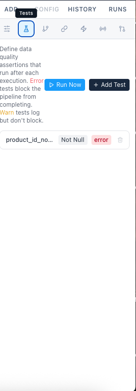
| Test Type | What it checks |
|---|---|
not_null | Column has no NULL values |
unique | Column has no duplicate values |
row_count_between | Output row count is within min/max bounds |
accepted_values | All values in a column are from an allowed list |
relationships | Column values exist in a reference table (referential integrity) |
custom_sql | A SQL query you write returns zero rows (i.e. no violations found) |
- Error severity — blocks the pipeline from being marked successful. Downstream pipelines that depend on this one will not run.
- Warn severity — logs the failure but does not block.
- Store failures — optionally write failing rows to a Dremio table for investigation (e.g.
MySpace._failures_product_id_not_null).
Version History & Run Log
Every save creates a version. Every execution creates a run record.
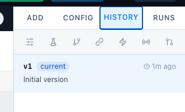
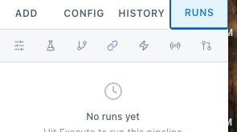
The HISTORY tab tracks every save. Click Restore on any version to rewind the pipeline steps to that state — useful for rolling back a bad change. The RUNS tab tracks every execution (manual, scheduled, or webhook-triggered) with full status details.
Pipeline Health Dashboard
Bird's-eye view of all pipeline statuses, success rates, and recent runs.
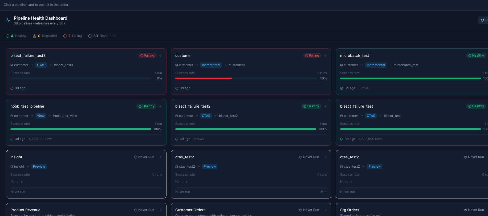
Click the Health button (pulse/waveform icon) in the toolbar. Summary counts at the top: Healthy · Degraded · Failing · Never Run. Each pipeline card shows a success rate bar, last run time, and row count. Click any card to jump directly to that pipeline.
Alerts
Custom SQL checks, pipeline health monitors, data quality alerts, and source freshness — all on a schedule.
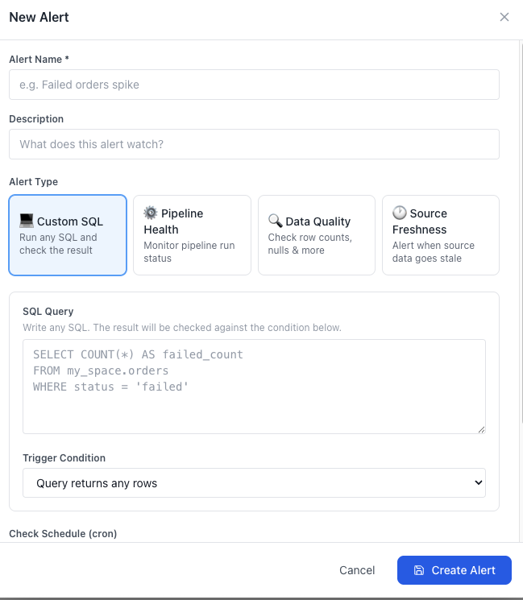
| Alert Type | How it works |
|---|---|
| Custom SQL | Runs a SQL query; fires if any rows are returned (e.g. SELECT 1 FROM orders WHERE status='error'). |
| Pipeline Health | Fires if a specific pipeline failed in its last N runs. |
| Data Quality | Fires if a DQ monitor's score drops below its threshold. |
| Source Freshness | Fires if MAX(timestamp_col) of a table is older than a configured threshold. |
Notifications go to email and/or Slack (configure in Settings → Notifications). Click Run Now on any alert to test it immediately.
Data Quality Hub
Dedicated DQ workspace with monitors, scoring, scheduling, and 14 built-in rules.
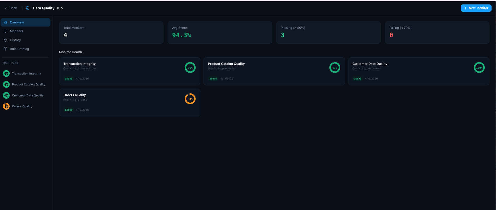
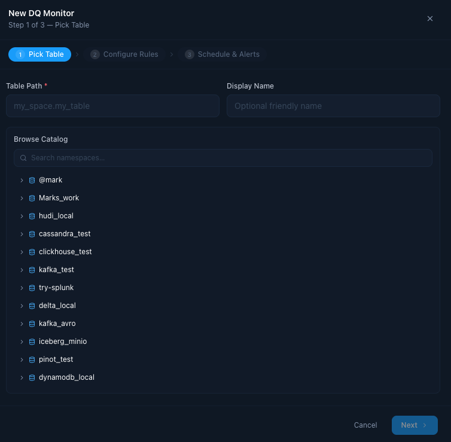
Click the DQ Hub button (🛡 DQ Hub) in the toolbar. Four sections:
- Overview: Stat cards + monitor health grid with animated score rings.
- Monitors: List all DQ monitors with score, last run, and controls.
- History: Cross-monitor scan log — all scans newest first.
- Rule Catalog: All 14 built-in rule types — click "Add to monitor" to quick-add.
DQ scores are a weighted average of rule pass rates. ≥ 90% green · 70–89% amber · < 70% red. Monitors alert via email/Slack when score drops below a configurable threshold.
Cross-Pipeline DAG
Visualise and manage dependencies between pipelines.
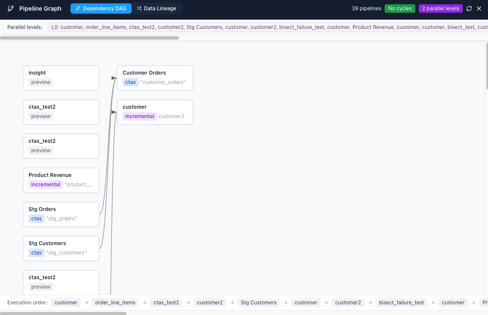
Click the Pipeline DAG icon in the toolbar (tooltip: "Pipeline DAG"). The full-screen view shows Dependency DAG and Data Lineage tabs. The DAG shows topological execution order, parallel levels, and highlights any cycles in red.
- Add dependencies from the Dependencies tab in the right panel of any pipeline.
- Use the Run with Dependencies button (GitMerge icon) to run the full upstream chain in order.
Pipeline Templates
Deploy a fully-configured pipeline from a pre-built template in one click.
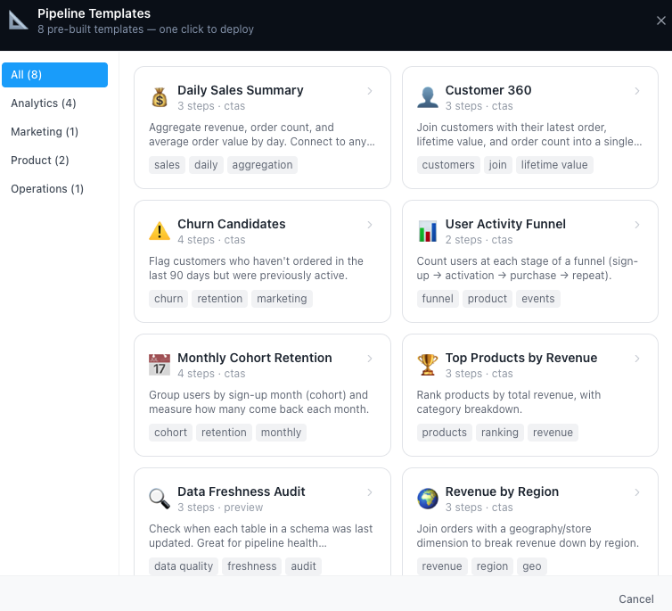
Click the Templates button in the toolbar (tooltip: "Pipeline templates"). Pick a template, review its steps and tags, enter your source table name, and click Deploy Template. Every step is fully editable after deployment.
📊 Daily Sales Summary
Analytics · 3 steps · CTAS
👤 Customer 360
Analytics · 3 steps · CTAS
🏆 Top Products by Revenue
Analytics · 3 steps · CTAS
🌍 Revenue by Region
Analytics · 3 steps · CTAS
⚠️ Churn Candidates
Marketing · 4 steps · CTAS
📈 User Activity Funnel
Product · 2 steps · CTAS
🗓 Monthly Cohort Retention
Product · 4 steps · CTAS
🔍 Data Freshness Audit
Operations · 3 steps · Preview
dbt Compatibility
Export pipelines as a dbt project, or import any dbt project — no dbt installation required.
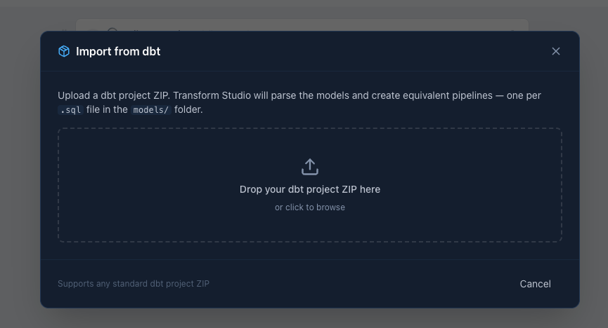
{{ ref() }}, {{ source() }}, {{ config() }}) without dbt installed.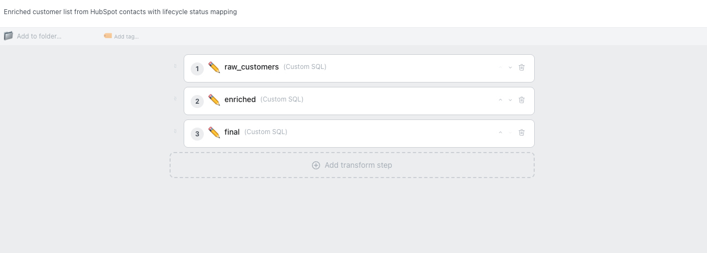
{{ ref() }} calls.Export to dbt
Click Export as dbt Project icon in toolbar. Downloads a ZIP with one .sql model per pipeline, sources.yml, schema.yml, and dbt_project.yml. Run with dbt run after editing profiles.yml.
Import from dbt
Click Import from dbt icon in toolbar. Drop a ZIP — resolves {{ ref() }} → pipeline deps, maps materializations, converts schema.yml tests to pipeline tests. Preview models before confirming the import.
Seed a Table from CSV
Upload a CSV directly to Dremio as a new table — no SQL needed.
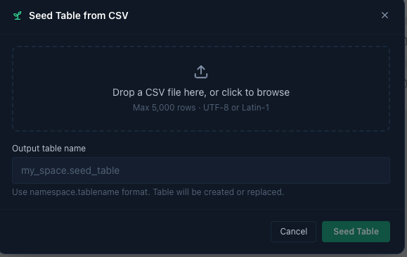
Click the Seed Table from CSV icon in the toolbar (tooltip: "Seed Table from CSV").
Drag and drop a
.csvfile (UTF-8 or Latin-1, max 5,000 rows).Enter the destination table name in
namespace.tablenameformat.Click Seed Table. The table appears in the catalog tree immediately.
MySpace) or Iceberg source. Seeding into @username home spaces creates a VDS, not a physical table.Settings
Five tabs covering connection, notifications, storage, security, and SSO.
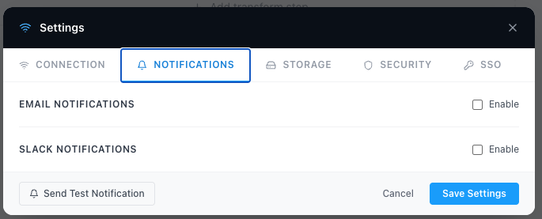
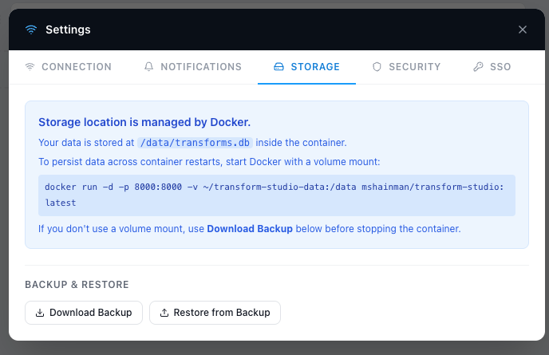
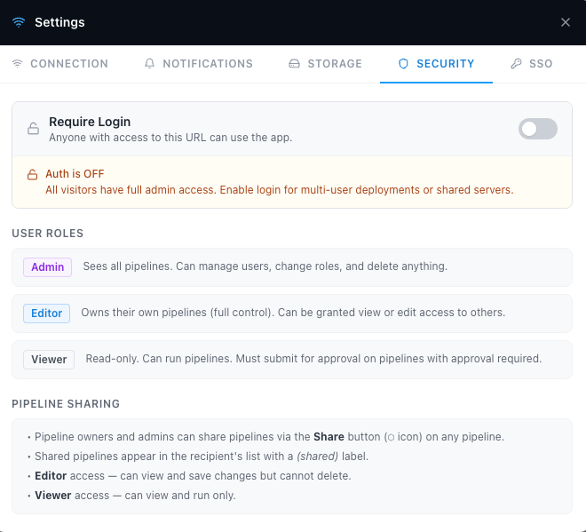
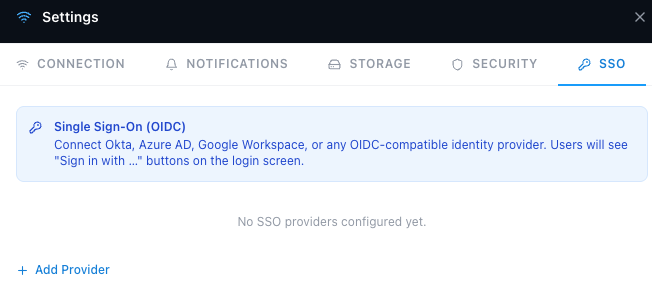
| Tab | What you configure |
|---|---|
| Connection | Dremio host, port, auth type, credentials. Test connection button. |
| Notifications | Email (SMTP) and Slack webhook for failure and SLA alerts. |
| Storage | SQLite DB path, Download Backup, Restore from Backup. |
| Security | Toggle auth on/off live, see role descriptions and sharing rules. |
| SSO | Add OIDC providers (Okta, Azure AD, Google Workspace, custom). |
Stopping the App
The desktop installer includes a dedicated Quit button in the toolbar.
When running the desktop app (Mac .dmg or Windows .exe), the toolbar shows a ⏻ Quit button — the red power icon at the far right. Click it to gracefully shut down the embedded server and close the application.
docker compose down from the terminal.Pro Tips
Power-user features worth knowing once you're comfortable with the basics.
Global Search ⌘K
Press ⌘K (Mac) or Ctrl+K to search all pipeline names, step configs, source tables, and notes instantly.
Tags & Folders
Tag pipelines with free-form labels and group them into folders. Filter the sidebar by tag to find related pipelines fast.
Environments
The Default dropdown in the toolbar switches between named Dremio connections — dev, staging, prod. All runs use the active environment.
Audit Log
Admins can see a full log of every create, save, execute, delete, share, schedule, and SLA breach — with user, timestamp, IP. CSV export included.
MCP Server
Built-in MCP server at /mcp/sse with 22 tools. Connect Claude, Cursor, or any AI agent to run, list, schedule, and inspect pipelines via natural language.
Export Documentation
The download icon in the toolbar exports a self-contained HTML doc covering all pipelines — steps, parameters, schedules, tests — shareable without a login.
Per-User Credentials
Each user can store their own Dremio PAT under User menu → My Dremio Credentials so queries run under their own Dremio identity.
Backup & Restore
Settings → Storage → Download Backup saves your full SQLite database. Use Restore to migrate between machines or recover from issues.
Dremio Transform Studio · v1.10 · github.com/dremio-community/dremio-transform-studio